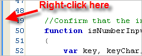

This page describes how to quickly view changes in your code with the Quick Diff feature.
Contents |
Introduction
The Quick Diff feature highlights the line numbers for all lines of code that have had changes made since your last save, which should help you track your changes as you code (shown below).
Instructions
You can quickly toggle Quick Diff on or off from the editor that you are working in. You can also modify the appearance of Quick Diff by changing your Quick Diff preferences.
Turning Quick Diff on or off
To turn Quick Diff on or off:
- Right-click in the gray margin at the left of the editor (The images below show the margin with and without line numbers turned on).

- From the context menu, select Show Quick Diff to toggle the Quick Diff feature on and off.

{kind=link}
{kind=link}
The highlighting feature turns on and off as you toggle Quick Diff on and off.
Changing your Quick Diff preferences
You can change your Quick Diff preferences, such as the highlight color, by going to the Preferences window.
To change your Quick Diff preferences:
- From the Window menu, select Preferences...
Aptana opens a Preferences pop-up window.
- On the left side of the Preferences window, expand the General tree.
- Expand the Editors tree, and then expand the Text Editors tree.
- Under Text Editors, select Quick Diff.
- Change your Quick Diff preferences.
- Click OK to apply your changes and close the Preferences window.